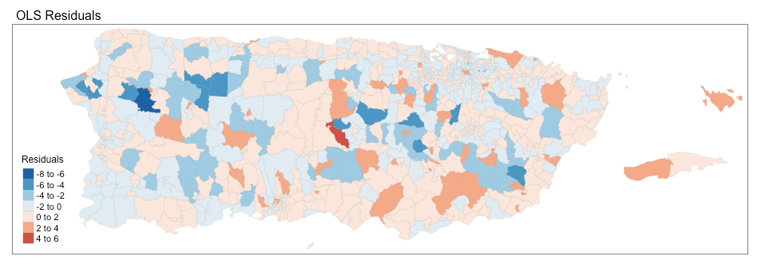

Social Vulnerability and Susceptibility to Damages
This research examines the relationship between social vulnerability factors and observed damages in Puerto Rico in the aftermath of Hurricane Maria. Spatial linear regression models are used to identify predictor variables from a subset of socio-demographic and housing indicators for disaster-caused damages to both real and personal property. Data is presented at the census tract level for communities whose residents applied for FEMA's Individual and Household Program (N=884). The results suggest that when controlling for disaster-specific factors, such as peak wind gusts and water levels, communities with greater poverty rates suffered more damages, on average. This finding highlights that more emphasis should be placed on these vulnerable groups in disaster response and recovery planning.
The United Nations International Strategy for Disaster Reduction (UNISDR) defines vulnerability as “the characteristics and circumstances of a community, system or asset that make it susceptible to the damaging effects of a hazard” (UNISDR 2009, p. 30). Additionally, prior research has shown that vulnerability is the propensity for loss of lives, livelihood or property when exposed to a hazard [1]. To that effect, this study assesses the relationship between socio-demographic factors and observed property damages in the aftermath of Hurricane Maria, a category five hurricane that moved diagonally across the island, devastating both land and life. All 78 municipalities in Puerto Rico were deemed eligible for Individual Assistance by FEMA.
Research identifying social factors that lead to a higher propensity for property damages have included renter status, income, race and poverty [2]. As a result, a subset of socio-demographic and housing indicators that are relevant based on prior work are chosen. The social factors included are at the census tract level, which means that the relationships in this study apply to broader geographic scales rather than at the individual level.
Damages Data
Once disaster survivors register for the Individuals and Households assistance, FEMA is required to verify losses to determine their eligibility for IHP Assistance (IHP Unified Guidance 2016, p. 41). A FEMA inspector assesses disaster-caused damages to the applicant’s pre-disaster residence and personal property such as furniture, appliances, vehicles, and essential equipment for daily household needs, and this dollar value is subsequently recorded. These applicant-level attributes have been made available through OpenFEMA’s public API, which are downloaded and utilized in this research. The individual damage data is aggregated at the census tract level and a per-capita value is calculated using population counts, obtained at the census tract level from the US Census Bureau’s 2017 American Community Survey, 5-year estimates. The distribution is highly skewed (see fig), and so a log transformation is performed on this variable, which serves as the outcome variable of interest.

Social Vulnerability Data
The socio-demographic and housing indicators for this study are sourced from the U.S. Census Bureau’s 2017 American Community Survey, 5-year estimates. The following indicators, available at the census tract level, are downloaded and calculated: Below Poverty Rate, Bachelor’s Degree Rate, Unemployed Labor Rate, Homes built 1979 or Earlier Rate, and Owner Occupied Rate. These variables serve as the predictors for this analysis.

Hurricane Wind Speeds
Hurricane peak wind gusts are included to control for disaster-specific factors, using the wind speed data made available by Applied Research Associates, Inc. (ARA) [3]. Hurricane wind speeds can be used to estimate potential property damage using the Saffir-Simpson Hurricane Wind Scale. Average wind speeds and a corresponding wind scale value is calculated for each census tract. Including this data in the analysis makes it possible to examine the hurricane’s impact on communities that had different levels of social vulnerability but experienced similar wind speeds.

Water Levels
Another control for disaster-specific factors is the measured water levels. During a FEMA on-site inspection, the total depth of water affecting the damaged dwelling, in inches, is recorded. Once again using OpenFEMA’s public disaster dataset, the average water level recorded for each census tract is calculated. This is visually compared to Puerto Rico’s flood lines [4] as a verification of the data to be used to control for flood-related damages.

Ordinary Least Squares (OLS)
OLS Regression Models were developed with the per-capita damage amount as the outcome variable of interest, and the list of socio-demographic and housing indicators from above as independent variables. Hurricane wind speed and water level attributes were used as controls for disaster-specific factors. However, the models showed violation of regression assumptions with a failing studentized Breusch-Pagan test (p-value = 1.787e-12) that indicates the presence of heteroskedasticity.
Regressions using observations from spatial data, such as US census tracts, can be influenced by spatial autocorrelation, which means the observations are not independent of each other. If the model residuals from a regression are spatially clustered beyond random chance, standard regression estimates are unreliable, as some variables could inflate coefficient values, invalidating tests of significance. The map below shows the residuals from the OLS model.
Spatial Autocorrelation
Moran’s I is a test for spatial dependency in the residuals of an OLS model. In order to run the test, it was necessary to load the census tract shapefiles (downloaded from the census website) and define a list of neighbors with boundaries. This generated a total of 886 regions and 5136 non-zero links between them, with the average number of links being 5.8. This is visualized below.
The results of the Global Moran's I for regression residuals had a p-value=2.935e-10, which means the null hypothesis that there is no spatial dependency between the residuals is rejected.
If the residuals are diagnosed to be spatially dependent, a remedial measure is to expand the linear regression model to a spatial linear regression model, as indicated by the results of the Lagrange Multiplier test. The test evaluates the appropriateness of the spatial lag model and the spatial error model, and in the event that both lag and error dependence are found to be significant, the results of the Robust LM test are used. Based on the results from the test (see table below), it is recommended to fit a spatial error model to the dataset.

Spatial Error Model
A spatial error model evaluates the extent to which the clustering of an outcome variable not explained by included independent variables can be accounted for with reference to the spatial clustering of error terms. In a sense, it corrects for standard statistical procedures where spatial dependence is present [5]. Once the spatial error model has been fit, it is evaluated using the spatial Hausman test with the null hypothesis that the SEM and OLS model estimates are comparable. An SEM model was fit to the dataset using the neighbors defined above and the results of the spatial Hausman test (p-value = 0.07219) indicate that the estimates are valid. Additionally, the Akaike Information Criterion (AIC), a measure for goodness-of-fit, showed that the SEM model is preferred.
The table below shows the results of the OLS and Spatial Error model(s). Given that the OLS model showed signs of heteroskedasticity, it was necessary to examine the influence of spatial autocorrelation, since if present, it would likely bias any resultant inferences. As evidence of spatial dependence was found, the results of the OLS models will not be discussed any further, however the coefficients and tests of significance are presented alongside those of the spatial error model for the reader to compare.
Peak wind gusts and water levels were found to be significant predictors of damages. This is expected as higher wind speeds and water levels are both correlated with disaster-caused damages to property. It is interesting to note however that peak wind gusts appear to be less significant in the SEM model compared to the OLS model, and this is probably related to the fact that this analysis examines the effects of a natural disaster, which follows a certain path, making certain geographic clusters more susceptible to the effects of the storm. Below Poverty Rate is a significant predictor of damages (p-value=0.01805). For every unit increase in the below poverty rate, one can expect an increase of approximately 1.5% in the amount of damages per capita. This is not only statistically significant but also a practically significant finding. It can also be observed that communities with a greater number of homes built in the year 1979 or earlier, suffer more damages, on average.

The results of this study highlight the disproportionate post-disaster outcomes for specific communities in that poverty is found to be significantly correlated with property damages. This finding does suggest that perhaps more emphasis should be given to these vulnerable populations during disaster response and recovery. A limitation of this study is that it only accounts for populations who applied for Individual Assistance and whose properties were inspected by FEMA. This analysis was unable to include damage data for applicants who were unable to register for assistance, perhaps due to accessibility issues, or who were denied inspections. Furthermore, only a limited subset of socio-demographic indicators were selected from a vast collection of data points available through the Census Bureau, and further research could include additional characteristics (race, gender, household composition, language, minority status). Nevertheless, this research provides important insights into post-disaster needs by highlighting specific vulnerable groups in Puerto Rico requesting assistance in the aftermath of Hurricane Maria.
- Using Disaster Outcomes to Validate Components of Social Vulnerability to Floods: Flood Deaths and Property Damage across the USA, https://www.mdpi.com/2071-1050/12/15/6006
- Social vulnerability to environmental hazards, https://onlinelibrary.wiley.com/doi/abs/10.1111/1540-6237.8402002
- https://disasters.geoplatform.gov/publicdata/NationalDisasters/2017/HurricaneMaria/Data/Wind/ARA/
- http://cedd.pr.gov/fema/index.php/download/
- https://ibis.geog.ubc.ca/~brian/workshop/GeoDa_Spatial_Regression.pdf
- https://svi.cdc.gov/A%20Social%20Vulnerability%20Index%20for%20Disaster%20Management.pdf
- Assessing the Relationship between Social Vulnerability, Social Capital, and Housing Resilience, https://www.mdpi.com/2071-1050/12/18/7718/htm
- https://rpubs.com/quarcs-lab/tutorial-spatial-regression